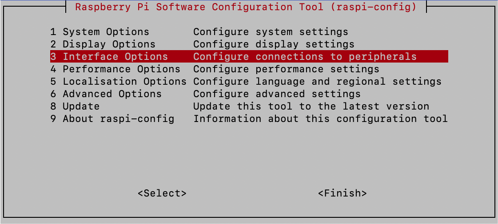
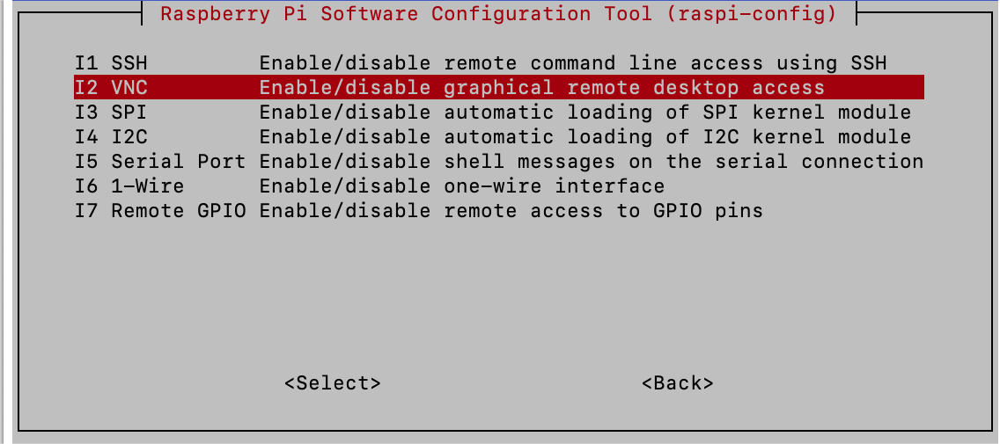
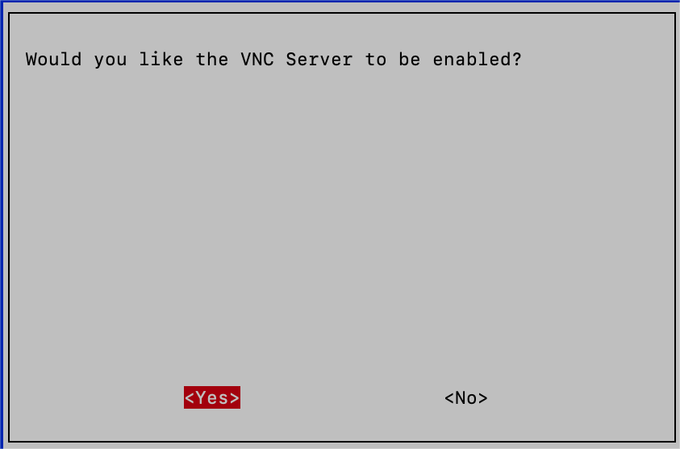
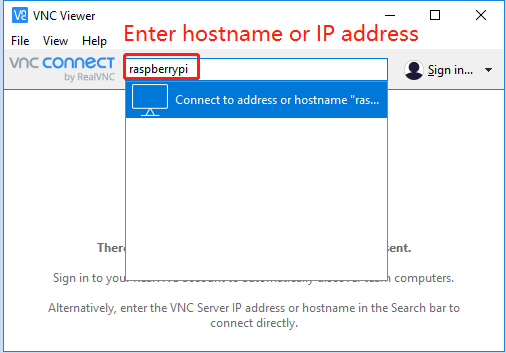
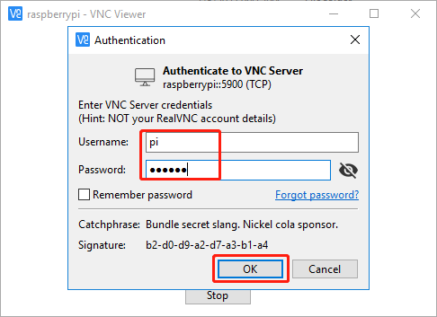

Nota
Ciao, benvenuto nella Community di appassionati di Raspberry Pi, Arduino e ESP32 di SunFounder su Facebook! Approfondisci il tuo viaggio con Raspberry Pi, Arduino ed ESP32 insieme ad altri appassionati.
Perché unirti a noi?
Supporto esperto: Risolvi i problemi post-vendita e le sfide tecniche con l’aiuto della nostra community e del nostro team.
Impara e Condividi: Scambia consigli e tutorial per migliorare le tue competenze.
Anteprime esclusive: Ottieni accesso anticipato a nuovi annunci di prodotti e anteprime.
Sconti speciali: Godi di sconti esclusivi sui nostri prodotti più recenti.
Promozioni e concorsi festivi: Partecipa a concorsi e promozioni durante le festività.
üëâ Pronto a esplorare e creare con noi? Clicca su [Qui] e unisciti oggi stesso!
Accesso Desktop Remoto per Raspberry Pi
Per chi preferisce un’interfaccia grafica (GUI) rispetto all’accesso da linea di comando, il Raspberry Pi supporta la funzionalità di desktop remoto. Questa guida ti illustrerà come configurare e utilizzare VNC (Virtual Network Computing) per l’accesso remoto.
Ti consigliamo di utilizzare VNC® Viewer per questo scopo.
Abilitazione del servizio VNC su Raspberry Pi
Il servizio VNC è preinstallato nel sistema operativo Raspberry Pi OS, ma è disabilitato di default. Segui questi passaggi per abilitarlo:
Inserisci il seguente comando nel terminale del Raspberry Pi:
sudo raspi-config
Usa la freccia verso il basso per navigare fino a Interfacing Options, quindi premi Invio.
Seleziona VNC dalle opzioni disponibili.
Usa i tasti freccia per selezionare <Sì> -> <OK> -> <Fine> e completa l’attivazione del servizio VNC.

Accesso tramite VNC Viewer
Scarica e installa VNC Viewer sul tuo computer personale.
Una volta installato, avvia VNC Viewer. Inserisci il nome host o l’indirizzo IP del tuo Raspberry Pi e premi Invio.
Quando richiesto, inserisci il nome utente e la password del tuo Raspberry Pi, quindi clicca su OK.
Ora avrai accesso all’interfaccia desktop del tuo Raspberry Pi.